Moje rozumienie DDD (+ clean architecture)
na przykładzie bajki o 3 świnkach
Perspektywa... ma znaczenie :)


DDD


|

|
|


|
||
 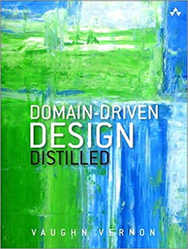
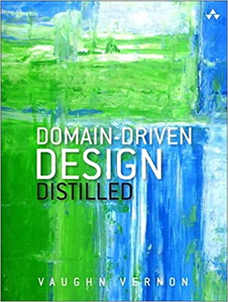
|
DDD taktyczne

Clean Architecture
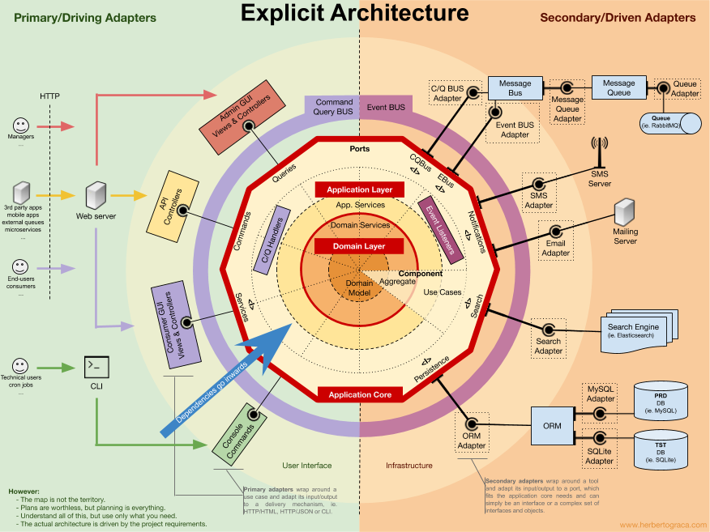

|

|

|

 
 
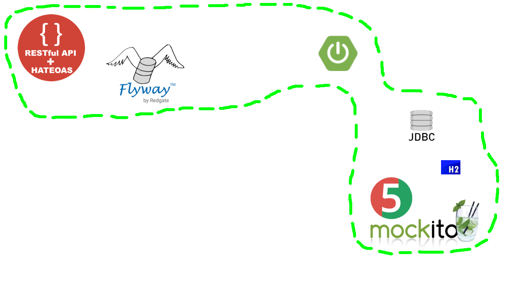
Założenia
- Budowanie ze słomy, z drewna, z cegieł
- Po zdmuchnięciu domu - ucieczka do sąsiedniego
- Rezygnacja wilka po próbach zdmuchnięcia domu z cegieł
- Wyciągnięcie wniosków przez świnki, nauka
-
Przemilczane:
- Wspinanie się wilka przez komin
- Zjadanie świnek
- Opowiadanie o mamie świnek
- Imprezowanie świnek po skończonej pracy
Jaki agregat?


 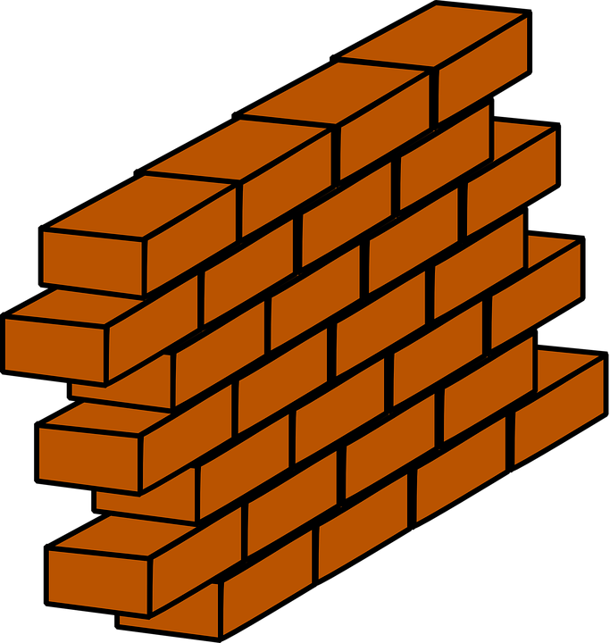
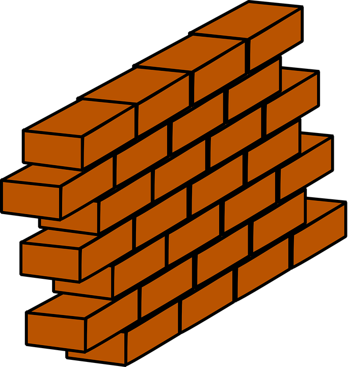
EventStorming!
- Kilka poziomów szczegółowości
- Big Picture
- Process-Level
- Design-Level
- Złota zasada: zdarzenia (czasowniki), a nie struktury danych (rzeczowniki)
- Rozróżnienie między komendami (zmieniają stan systemu), a widokami
Big Picture
Design-Level
User Story
- Co system powinien "wystawić na świat"
- Jako użytkownik, chcę poznać bajkę o trzech świnkach, żeby móc ją
opowiedzieć innym
- ...
-
Jako świnka, chcę zbudować dom, dostosowany do moich potrzeb
- Dokumentowanie i utrwalanie informacji
-
Jako wilk chcę zdmuchnąć dom, żeby móc złapać świnkę
- Rejestr - z tym domem już próbowano
Jak zbudować dom?


public class BigBadWolfService {
private final DomainEventPublisher eventPublisher;
BigBadWolfService(final DomainEventPublisher eventPublisher) {
this.eventPublisher = eventPublisher;
}
public void blowDown(final House target) {
try {
target.handleHurricane();
} catch (House.IndestructibleHouseException e) {
retryBlowing(target);
}
}
private void retryBlowing(final House target) {
try {
target.handleHurricane();
} catch (House.IndestructibleHouseException e) {
eventPublisher.publish(
new WolfResignedFromAttacking(target.getSnapshot().id())
);
}
}
}
Specyfikacja
@Unroll('house from #inputMaterial vs. #resource')
def 'should fail for material different than in specification'() {
given:
def house = houseFrom inputMaterial
expect:
!new ConstructionSpecification(resource).isSatisfiedBy(house)
where:
resource | inputMaterial
STRAW | BRICKS
WOOD | STRAW
STRAW | WOOD
}

Overengineering?


{kind=link}
{kind=link}
WolfOnSteroidsSpecification {
boolean isSatisfiedBy(Wolf wolf) {
return wolf.powerLevel() > 9000;
}
}

 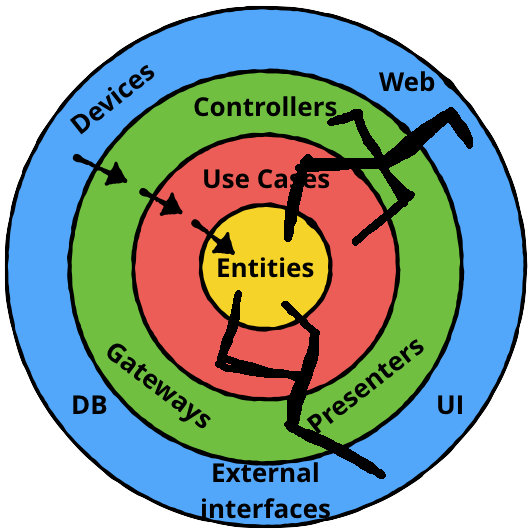
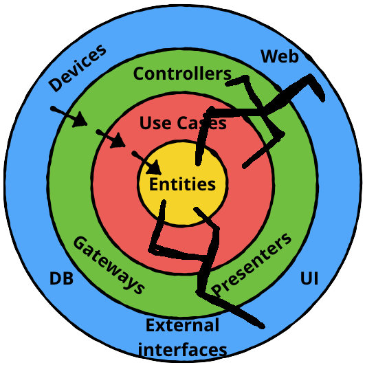
@Before("handling()")
void logBeforeHandling(JoinPoint jp) {
if (logger.isInfoEnabled()) {
var command = jp.getArgs()[0];
if (command instanceof BuildHouse buildCommand) {
switch (buildCommand.getOwner()) {
case VERY_LAZY -> logger.info("The first little pig was very lazy");
case LAZY -> logger.info("The second little pig was a bit more ambitious");
case NOT_LAZY -> logger.info("The third little pig was ready for hard work");
}
}
}
}
Dzięki!
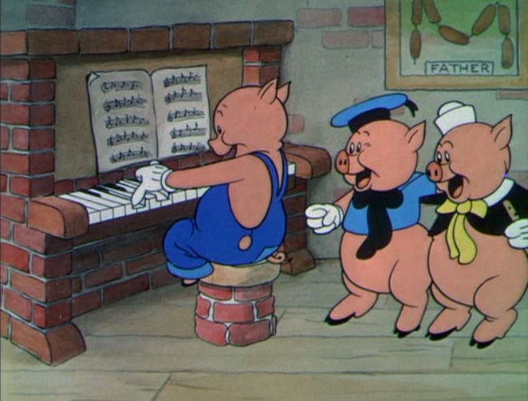 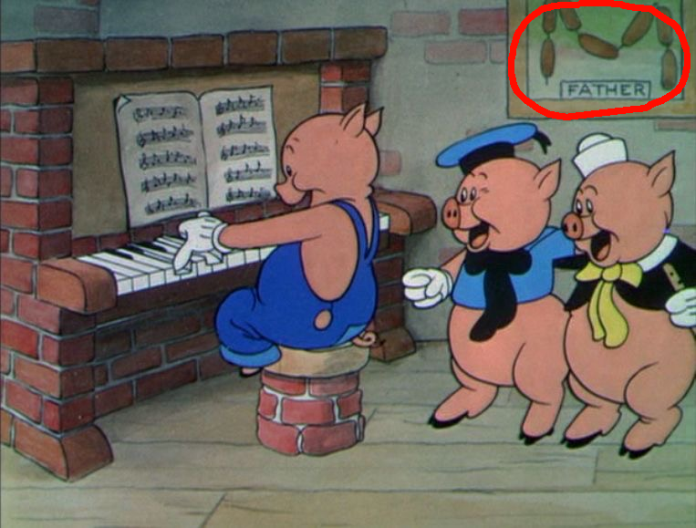{kind=link}
- Newsletter + raport JS: mat3e.github.io/trendy
- Kod: github.com/mat3e/3pigs-ddd
- Prezka: mat3e.github.io/talks/3pigs/wdi21